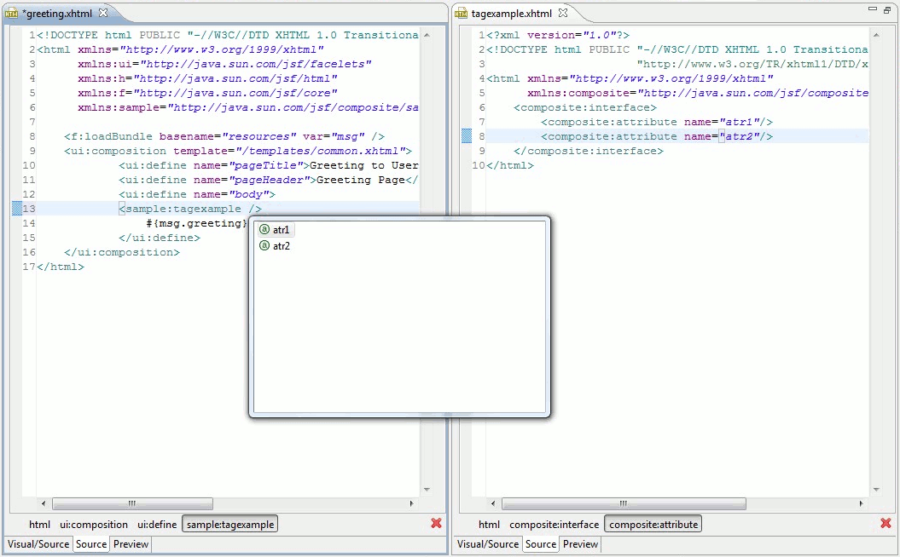
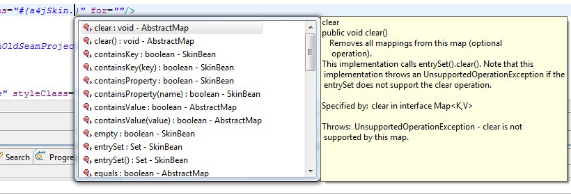
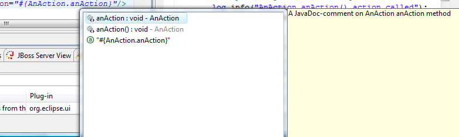
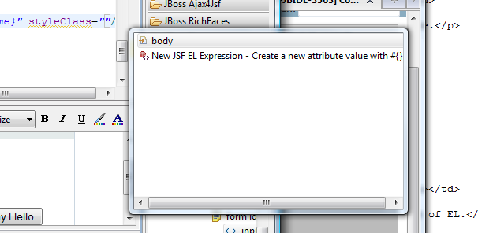
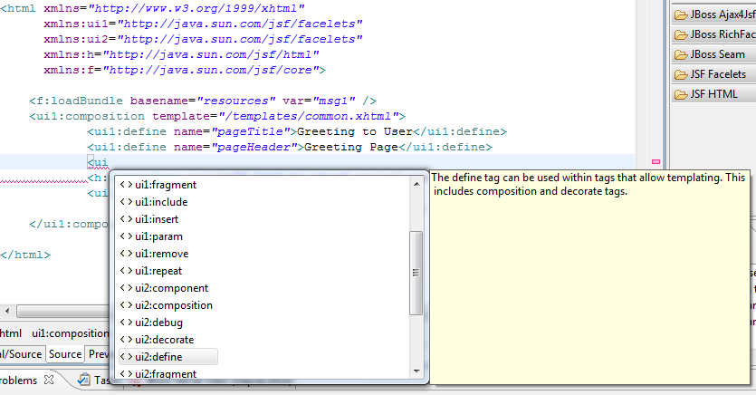
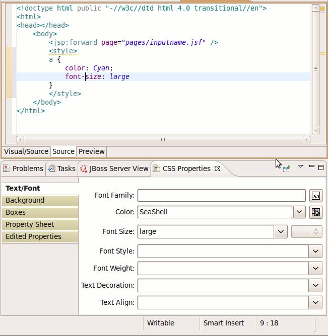
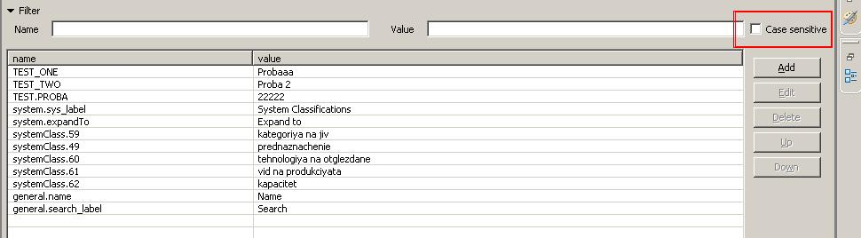
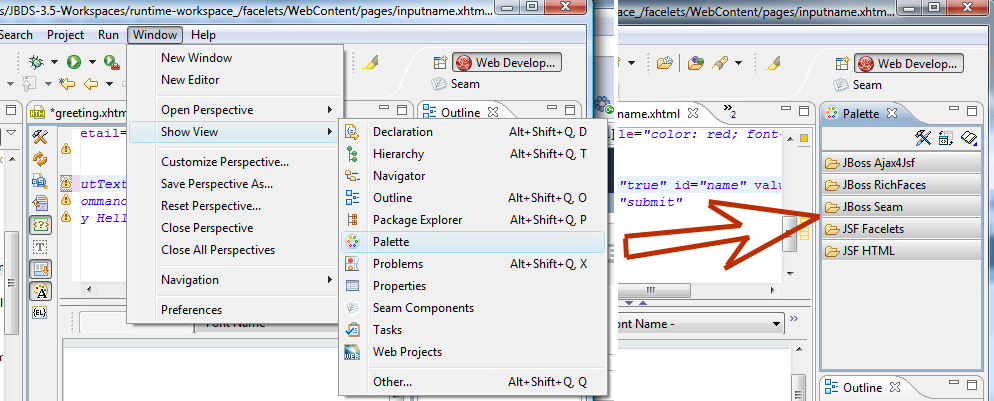

Refactoring / References Search
|
| Search EL references to Java Method or Property |
Find references and rename now supported through context menu or Ctr+Shift+G for:
- Manage Bean's property/method
- JavaBean property/method
- Message Bundle property
Related Jira
|
Code Assists
|
| JSF 2 Composite Component Attributes |
Content assist now understands composite componenents from JSF 2. When you use a composite component code assist reads the component metadata and provide code completion for the components attributes.

Related Jira
|
|
| Resource Bundle Content Assist
from includes |
Resource bundles (f:loadBundle) included in
templates are now considered when perfoming content
assist in files that uses the templates.
Related Jira
|
|
| EL Hoover Doc |
Content assists for expression language now shows
Java doc if available for referenced methods.


Related
Jira
|
|
| Content Assist on CSS class
names |
Content assists for "class" and "styleClass"
attributes for html and jsf tags shows CSS available
on the page.

Related
Jira
|
|
| Content Assist on JSF
Tags |
Content assists supports multiple namespaces with
the same URI.

Related
Jira
|
Hyperlinking in XML/JSP/XHTML Editors
|
CSS Class Hyperlink
[3.1.0.CR1] |
CSS Class Hyperlink for "class" attribute of HTML-tags searches and opens the CSS-classes defined in stylesheets loaded using JSF tags like <a:loadStyle />
Related Jira
|
CSS Style Editing
|
| 'CSS Properies' view |
'CSS Properties' view can be used in for jsp files to edit styles inside style node.

Related Jira
|
Editors
|
| Properties Editor |
Properties editor now supports search in property file using regular expressions

Related Jira
Related Jira
|
|
| Content Navigation |
Open-on now understands EL substitution. Allowing openOns to work on expresssions like #{images}/seamlogo.png. This will work if #{images} is defined and resolves to a folder where seamlogo.png is present.
Related Jira
|
|
| Palette View |
JBoss Tools Palette is hooked into standard Eclipse GEF Palette view. Now it can be accessed from "Window->Show View->Palette".

Related Jira
|
|
RichFaces Support
|
| 3.3.2.S1 release included |
Richfaces 3.3 Capability was updated to Richfaces 3.3.2.SR1
release
Related Jira
|